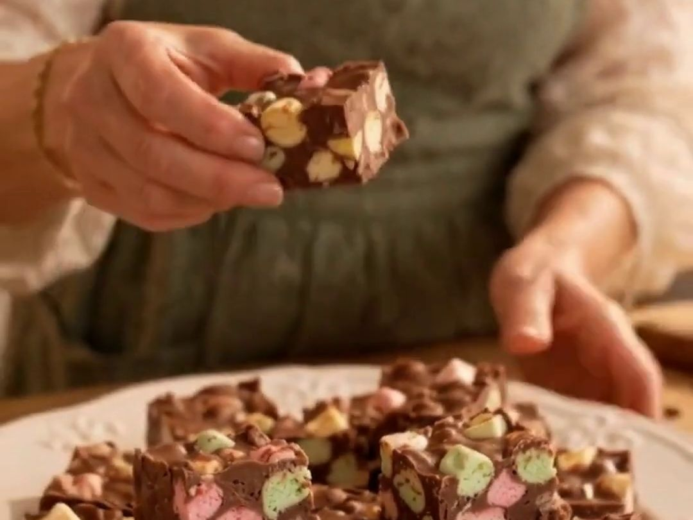

No-bake · 4 ingredients
Chocolate Confetti Squares
Don't love baking, but still want to impress everyone at Christmas? Darling, these are for you. Four ingredients, no oven, and if everyone thinks you've been baking all afternoon, there's absolutely no reason to correct them.

Ingredients
- ¼ cup butter or margarine
- ½ cup peanut butter
- 1 cup semisweet chocolate chips
- 1 bag (250 g) miniature coloured marshmallows
Instructions
- Melt the butter and peanut butter together in a large saucepan over low heat.
- Stir in the chocolate chips until completely melted and smooth.
- Remove from the heat and let the mixture cool until the bottom of the saucepan is comfortable to touch.
- Gently fold in the coloured marshmallows until completely coated.
- Press into a parchment-lined 9 × 9-inch pan.
- Refrigerate until firm, then cut into squares.
🌿 Sage's Tip
Make sure the chocolate mixture has cooled before adding the marshmallows. Otherwise, you'll end up with chocolate marshmallow soup!